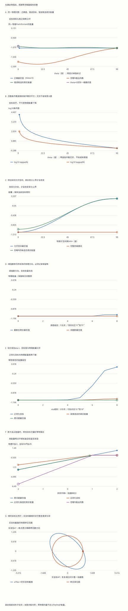

本页目录
基础衔接 07 · MPS 局部优化：同一个物理态，为什么会算出不同的能量？
先修：张量网络与变分方法、量子变分法。本讲把一次固定环境下的局部优化算到底：复数坐标、范数矩阵、正交化、降秩和数值正则化分别核对。它没有执行完整 DMRG 扫描。
1. 先问“允许哪些态”，再问“用什么坐标”
假设我们只允许尝试某个线性子空间中的态。固定 MPS 中央张量以外的所有张量后，把中央张量展平成列向量 \(a\)，整个网络对它的依赖是线性的：\(|\psi(a)\rangle=Wa\)。\(W\) 的每一列，就是一个中央坐标取 1、其余取 0 时得到的完整物理态。实际大系统通过环境收缩使用这个映射，本讲把小矩阵完整写出。
这给出两个不同的问题。改变可逆坐标可以保持 \(\operatorname{im}W\) 不变；改变环境或删除一个独立方向，可能改变真正允许的物理态。前者不能改变精确最优能量，后者通常会改变。两列各自归一化仍可能互相不正交，因此不能把坐标平方和当成物理范数。
分子和分母必须使用同一个映射。分子里保留了环境重叠，分母却改成 \(a^\dagger a\)，就已经换了问题。
2. 广义本征方程是归一化约束的结果
先假定 \(W\) 满列秩，因而 \(N\) 正定。在物理约束 \(a^\dagger Na=1\) 下令能量驻定。对复坐标的实部、虚部分别变化，等价于对 \(a^*\) 变化：
左乘 \(a^\dagger\)，就确认乘子 \(E\) 是真实 Rayleigh 商。最低广义本征值给出当前线性子空间中的最优能量，并满足 \(E_{\rm full}\le E_{\rm allowed}\)。这里的“最优”指固定环境；它不是整个非线性 MPS 族的全局最优保证。
注意两种残差也有不同含义。允许空间中的驻点满足 \(W^\dagger(H\psi-E\psi)=0\)，但完整物理残差 \(H\psi-E\psi\) 可以非零：它可能指向当前不允许的方向。实验同时保留坐标广义残差与完整物理残差，避免把局部收敛当成全局本征态。
3. 默认两维算例：三种“能量”不能混叫
先用正交态 \(e_0=|00\rangle,e_1=|11\rangle\)，在这两个态的空间里令
记 \(c_\theta=\cos\theta,s_\theta=\sin\theta\)，直接相乘得到
默认 \(\theta=60^\circ,\lambda=0.5\)。正确最低能量是 \(-\sqrt{1.25}\approx-1.118034\)；忽略 \(N\)，普通对角化报告约 \(-1.541275\)。把这个错误算法给出的向量重新放回真实 Rayleigh 商，却得到约 \(-1.074769\)。最后一个值依然高于正确基态，变分原理没有失效；失效的是把错误目标的本征值叫作物理能量。

4. 复数与缩放：实验如何区分坐标和物理空间
完整小系统按 \(00,01,10,11\) 排序，所有矩阵都保存在下载记录中。能量单位固定为 1，允许共同改变零点 \(c\)：
两个物理块分别有能量 \(c\pm\sqrt{1+\lambda^2}\) 和 \(c+0.6\pm\sqrt{0.04+\mu^2}\)。实验先合并这四个能量，得到完整系统基态，再与允许空间比较。
允许空间由两个正交列 \(q_0=\cos\beta|00\rangle+\sin\beta|01\rangle\)、\(q_1=\cos\beta|11\rangle+\sin\beta|10\rangle\) 张成，记 \(Q_\beta=(q_0,q_1)\)。改变 \(\beta\) 会改变空间本身。然后另作坐标变换：
只改变 \(\theta>0,d>0,\phi\) 时，允许空间不变。\(\theta=90^\circ\) 只保证两列正交；还需 \(d=1\)，才有 \(N=I\)。复数内积必须用共轭转置，不能把实矩阵中的转置符号照搬过来。默认 \(\beta=c=\phi=0,d=1\)，恢复上一节原例。
5. 正交化为什么有效，数值上应该求解什么
本例已经有薄 QR 分解 \(W=Q_\beta R\)。令 \(y=Ra\)，物理范数变成 \(y^\dagger y\)，能量分子变成 \(y^\dagger Ky\)。先解普通 Hermitian 问题 \(Ky=Ey\)，再通过三角求解 \(Ra=y\) 恢复原坐标。
写逆矩阵是为了证明；实现可以通过分解与三角求解完成，不必显式形成 \(N^{-1}H_{\rm eff}\)。后者一般看起来不再 Hermitian，也会遮住正确的内积结构。
另一条路从范数谱出发。设 \(N=U\operatorname{diag}(n_j)U^\dagger\)，保留正谱支撑，令 \(S\) 的列为 \(u_j/\sqrt{n_j}\)。那么 \(S^\dagger NS=I\)，在此支撑上解 \(S^\dagger H_{\rm eff}S\)，最后令 \(a=Sz\)。实验实际构造这些矩阵，并与直接 \(K\) 解对照；没有把正交化只写成一句说明。
6. 小本征值、真降秩、阈值截断是三回事
默认尺度和相位下，\(N\) 的两个本征值为 \(1\pm\cos\theta\)，因此
一般尺度下仍有 \(\det N=\sin^2\theta\)。实验用“行列式除以大根”计算小根，减少两个近数相减的精度损失。独立核验则直接对 \(W\) 作 SVD，比较奇异值平方。\(\theta=1^\circ\) 的小正根仍是正根，不能因为小就悄悄设成零。
在 \(\theta=0\)，\(W\) 的像真正只剩 \(q_0\)，允许能量变成 \(q_0^\dagger Hq_0\)。例如默认物理问题中，正角度最优值一直是 \(-\sqrt{1.25}\)，零角度却是 \(-1\)。这不是连续函数的普通端点：允许空间维数变了。图把零度的正确值单独标记；条件数无穷不画成某个有限大数。
阈值算法另外规定只保留 \(n_j>\tau n_{\max}\) 的方向。删除一个仍为正的方向会缩小允许空间，真实变分最低能量只能不降。阈值后的完整坐标残差未必为零，只需在保留空间中驻定。阈值是坐标相关的数值选择，必须记录 \(\tau\)、保留秩和结果稳定性；它不是“这些物理态原本不存在”的证明。
7. 加 eta I：一个可算到零物理态的反例
把分母改成 \(a^\dagger(N+\eta I)a\) 后，求解的是 \(H_{\rm eff}a=\varepsilon_\eta(N+\eta I)a\)。\(\varepsilon_\eta\) 是修改后的目标。若 \(Wa\ne0\)，仍须另算原物理能量 \(a^\dagger H_{\rm eff}a/(a^\dagger Na)\)。
最清楚的反例取 \(\theta=0,\beta=0,d=1,c=2\)。此时 \(N=H_{\rm eff}=\left(\begin{smallmatrix}1&1\\1&1\end{smallmatrix}\right)\)，实际像空间中的唯一能量为 1。取 \(\eta=1\)，修改问题的两个本征值为 \(0,2/3\)。最低值 0 对应坐标 \((1,-1)^T\) 的方向，但 \(Wa=0\)，根本没有可归一化物理态。
这不是一句“误差可能略大”的提醒，而是目标发生变化后的确定后果。实验对这个预设显示“真实物理能量不适用”，保留原始坐标、范数和完整矩阵，不给零向量硬凑一个能量。
还可以用能量零点检查：
正确广义能量整体加 \(c\)。普通 \(H_{\rm eff}\) 本征值通常不整体加 \(c\)；正则化目标也通常不整体加 \(c\)，因为它的分母是 \(N+\eta I\)。实验扫描 41 个零点，分别画出目标与候选态真实能量。这里比较的是各次重新优化的候选态；其真实能量除整体平移外，还可能因所选态改变而变化。
8. 先预测，再看七张图与完整记录
先保持物理参数不动，试“缩放坐标”和“复数坐标”；再改变 \(\beta\)，观察这次为什么可以改变正确能量。接着比较一度夹角、零度夹角、阈值截断和正则化。最后用能量零点预设检查算法究竟在最小化什么。
无脚本对照：六份固定记录保留完整复矩阵、支撑变换、候选态与全部扫描。复数为[实部,虚部]；零物理态的真实能量不适用。
| 预设 | 实际秩 | kappa(N) | 正确能量 | 忽略N的值 | 错误候选真实能量 | 阈值后秩 | eta | 正则化目标 | 正则化候选真实能量 | 零物理态 |
|---|---|---|---|---|---|---|---|---|---|---|
| 默认坐标 | 2 | 3 | -1.11803399 | -1.54127524 | -1.07476889 | 2 | 0.001 | -1.11716603 | -1.11803391 | 否 |
| 复数坐标 | 2 | 3 | -0.618198365 | -0.715506296 | -0.568361474 | 2 | 0.001 | -0.617604096 | -0.618198293 | 否 |
| 实际降秩 | 1 | 不适用 | -1 | -2 | -1 | 1 | 0.001 | -0.99950025 | -1 | 否 |
| 阈值截断 | 2 | 130.646096 | -1.11803399 | -2.12841172 | -1.07306038 | 1 | 0.001 | -1.11600582 | -1.11798858 | 否 |
| 大正则化 | 2 | 3 | -1.11803399 | -1.54127524 | -1.07476889 | 2 | 10 | -0.134845117 | -1.08069622 | 否 |
| 零物理态 | 1 | 不适用 | 1 | 0 | 不适用 | 1 | 1 | 0 | 不适用 | 是 |
下载六份完整记录，含所有原始复矩阵、真实归一化、修改目标、阈值和全部扫描点。
七张图分别追踪坐标能量、条件数、允许空间、阈值、正则化、零点平移和单位范数。实坐标图只取 \(a_0,a_1\) 为实数的截面；有复相位时，这个截面不能代表整个复数空间的零方向。秩亏时截面也可能无界；有限方向采样不构成有界性证明。全部 361 个方向、所有扫描点和复数矩阵都在表与下载中。

9. 回到真正的 MPS：范数来自两侧环境
把中央张量写成 \(a_{\alpha s\beta}\)，完整态为 \(\sum_{\alpha s\beta}a_{\alpha s\beta}|L_\alpha\rangle|s\rangle|R_\beta\rangle\)。其范数矩阵不是凭空添加的校正项，而是两侧环境内积：
左侧若逐站满足 \(\sum_s(A^s)^\dagger A^s=I\)，从开放边界递推就得到正交左块态；右侧满足 \(\sum_s B^s(B^s)^\dagger=I\) 时同理。两侧都规范化后，中央 \(N=I\)，才可以安全地解普通局部本征问题。周期边界和一般非正交环境不能直接套用这一结论。
移动正交中心时，把 \(a_{\alpha s\beta}\) 重排成行指标 \((\alpha,s)\)、列指标 \(\beta\)，做薄 QR；把 \(Q\) 留在本站点，把 \(R\) 乘进右邻张量。完整乘积仍是同一个 \(QR\)，物理态不变，本站点加入左正交区域。这个操作本身没有丢弃权重；若另做 SVD 截断，必须单独记录误差。后续完整乘积态扫描、八维中心与环境收缩、两站点截断分别接上这些工作。
10. 八道迁移题：把数值标签还原成物理问题
1. lambda=0，为什么仍可能不能省略N？
物理耦合为零不等于坐标正交。原例取 theta=60°，则 Heff=[[-1,−1/2],[−1/2,1/2]]，普通最低值为 (−1−√13)/4≈−1.151388，低于真实基态−1。将其候选态正确归一化后，真实能量约−0.901388，仍服从变分下界。
2. theta=90°时，只看两列正交是否足够？
不够。本实验还允许尺度d与1/d，此时N=diag(d²,d⁻²)。只有d=1才是单位矩阵；正交与正交归一是不同条件。
3. 正角度的最优值不随theta变，为什么零度可以跳？
正角度时det R=sin theta非零，两个独立物理方向都可表示。零度时只剩q0，实际可行集合变小。原例从−√1.25变成−1；不能把秩变化当成同一可行集合中的平滑坐标变化。
4. 截断之后，全坐标广义残差不为零，一定说明算错了吗？
不一定。它只需在保留支撑上驻定，被删除方向上可以有残差。先检查保留基S†NS=I与S†(Heff a−ENa)=0，再检查其真实物理能量；同时记录阈值与保留秩。
5. 正则化最低值0能证明存在零能量物理态吗？
不能。第7节给出N=Heff=[[1,1],[1,1]]、eta=1的具体反例。坐标方向(1,−1)在W的核中，修改目标为0，但物理态为零，Rayleigh商未定义。原实际像空间能量是1。
6. 将H整体加cI，在Heff中加cI为何通常错误？
先做实际收缩：W†(H+cI)W=Heff+cW†W=Heff+cN。只有N=I时才是cI。正确求解的候选态可以保持不变，能量整体加c；其他目标的重新优化还可能改变所选态。
7. 允许空间内已经最优，完整物理残差为什么仍可能非零？
局部驻定只要求残差与所有允许变化Wa正交。它可以指向允许空间外，因此W†残差为零不等于残差本身为零。这也是单次固定环境求解不能证明完整DMRG全局收敛的原因。
8. QR移动中心与SVD截断，哪个步骤改变物理态？
精确QR后把R完整吸收到相邻张量中，乘积保持不变，只改变张量分配与规范。SVD若删除非零奇异值，则改变物理态，需报告丢弃权重和截断后的真实范数、能量。不能把两步的效果合并成一句“规范化误差”。
速查与原始阅读
先算允许空间，再用同一个W构造N和Heff；可逆坐标保持物理变分问题，秩亏、阈值和正则化分别处理。原始背景见 Schollwöck 的 MPS／DMRG 综述，第4.1.2、4.4、6.3节，尤其式(210)的广义问题与混合规范下的N=I。本讲的有限复矩阵、正则化反例与扫描独立推导；来源核查2026-09-13。
返回张量网络，继续完整乘积 MPS 扫描，或完成从 Schmidt 截断到变分扫描的连续作业。